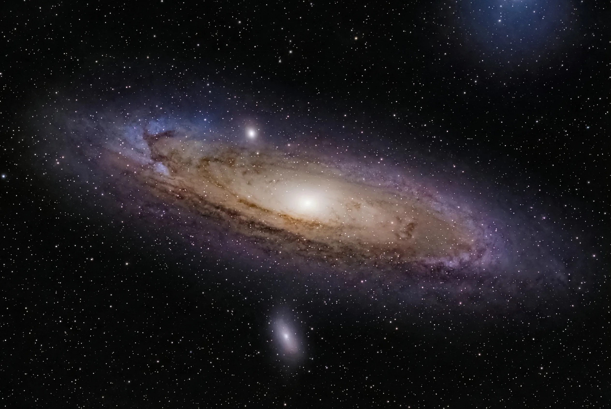

Esplora l'infinito con l'Associazione Astrofili Teatini
Da Chieti al cuore del cosmo: osservazione, ricerca e divulgazione astronomica dal 1974.
Dal 1974, uno sguardo condiviso verso il cielo
L'Associazione Astrofili Teatini nasce il 3 gennaio 1974 e opera da oltre cinquant'anni tra le province di Chieti e Pescara, unendo appassionati di osservazione, astrofotografia, divulgazione e ricerca astronomica amatoriale. La nostra missione è avvicinare le persone alla meraviglia dell'universo, con un impegno costante anche nella lotta all'inquinamento luminoso.
Nel corso della sua storia l'associazione ha organizzato congressi nazionali, mostre di astronomia e progetti didattici nelle scuole, mantenendo sempre vivo il legame con il territorio abruzzese.
Le nostre attività
Osservazione e astrofotografia
Uscite osservative nei siti bui dell'Abruzzo, dal Gran Sasso alla Majella, e sessioni di astrofotografia in montagna e in città.
Divulgazione e didattica
Divulgazione pubblica e nelle scuole, con progetti educativi come "Con la testa tra le stelle" realizzato nel 2010.
I profili AstroBin dei nostri soci
Scopri gli scatti astrofotografici dei nostri soci sulle rispettive gallerie AstroBin.
Niki Giannandrea
Vedi profilo AstroBinTullio Di Primio
Vedi profilo AstroBinEdoardo Perenich
Vedi profilo AstroBinI nostri partner
Cieli Limpidi, Gruppo Astrofili Abruzzesi
Gruppo di astrofili abruzzesi specializzato in astrofotografia e deep sky imaging, attivo tra Pescara e l'Abruzzo. Un partner con cui condividiamo la passione per l'osservazione e la divulgazione del cielo notturno.
Visita il sitoEntra a far parte dell'associazione
L'associazione è aperta a tutti gli appassionati del cielo. Scopri le modalità di iscrizione e unisciti alla nostra comunità di astrofili.